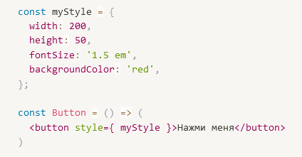
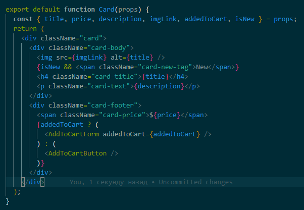
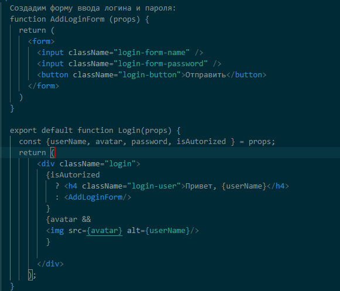

-
Какую ошибку я допустила в примере?

Ответ: В значении свойства fontSize между числом и единицей измерения не должно быть пробела. И в написании свойства кнопки "Нажми меня" тоже лишние пробелы style={ myStyle }.
- Какие есть способы работы со стилями в React?
Ответ:
- инлайновая стилизация;
- таблицы стилей;
- css модули;
- css препроцессоры.
- Как будет выглядеть карточка товара, если ей передать атрибут addedToCart===0?
Ответ:
Строгое равно проверяет на равенство две величины, при этом тип каждой из величин перед сравнением не изменяется (не приводится). Если значения имеют различающиеся типы, то они не могут быть равными. В нашем случае мы сравниваем сроку с числом, они не равны, и мы получим значение false. И в карточке отрисуется кнопка "Заказать".
-
Какие ещё проверки нужно было бы сделать для атрибута addedToCart?
можно добавить проверку на undefined:
{addedToCart !== undefined && addedToCart
?
:
}
-
Клиент попросил повесить тег «New» на товары из новой коллекции. Как это сделать, какой условный оператор выбрать?
Ответ: нужно добавить новое свойство к товарам, например isNew. Добавить проверку на наличие этого свойства у товара с помощью логического оператора &&, и, при наличии свойства, отображать тег New перед заголовком товара.

-
Какими тремя способами можно написать условный рендеринг?
Ответ:
- с помощью выражения if
- с помощью тернарного оператора
- с помощью логического оператора &&
-
Представьте, что вы пишете компонент логина. Если пользователь авторизован, то мы показываем его имя, а если нет, то даём возможность ввода логина и пароля. Какой код для этого нужно написать, если за авторизацию пользователя отвечает флаг isAutorized?
Ответ:

-
В чём преимущества использования препроцессоров? Какой ещё есть способ использовать переменные, кроме $ в препроцессорах?
Ответ:
Преимущества использования препроцессоров:
- разделение на небольшие файлы. Можно организовать блочную систему стилей;
- можно использовать переменные и миксины;
- вложенные селекторы внутри родительских;
- можно использовать амперсанд вместо написания родительского селектора;
- можно в стилях использовать математические операции.
Можно объявить переменную в CSS, без использования препроцессора, для этого достаточно придумать для неё имя, поставить перед ним два дефиса, а после имени — двоеточие и значение переменной: body {--font-s: 20px;}